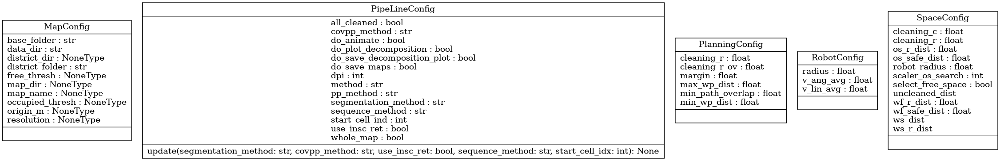
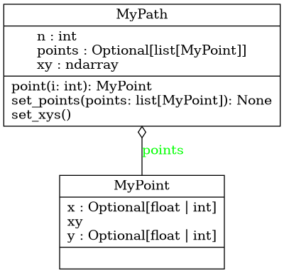
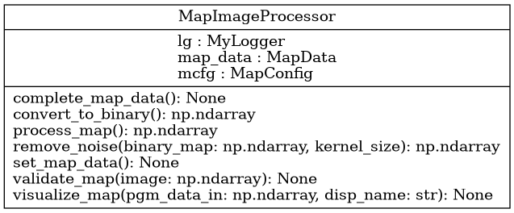
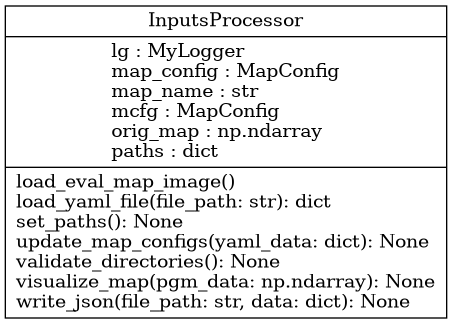
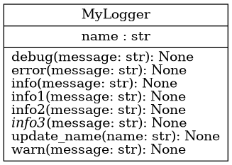
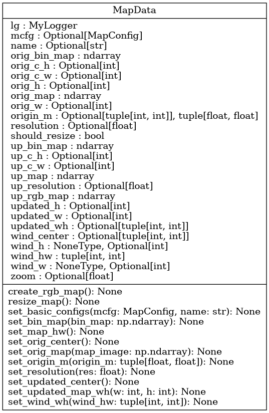
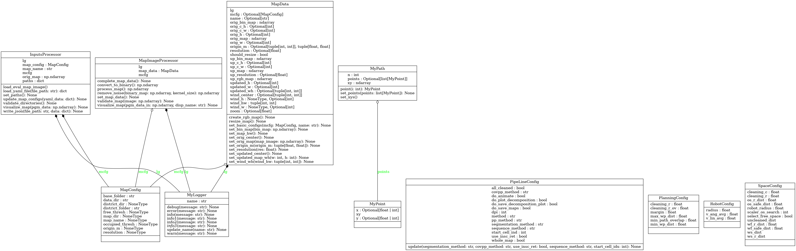

covpp.base
Submodules
covpp.base.base_utils
Utility functions.
- get_n_colors_plt(n: int) list
Get n distinct colors from matplotlib's colormaps or HSV spectrum.
- get_n_colors_cv(n: int) list
Get n distinct colors in BGR format for OpenCV.
- visualize_map(map_image: numpy.ndarray, name=None) None
Visualize PGM map data using OpenCV.
- visualize_map_s(map_image: numpy.ndarray, w_name=None, wait=True) None
Visualize PGM map data using OpenCV (simple version).
covpp.base.configs


Configuration dataclasses used by the pipeline.
- class MapConfig
Bases:
objectContainer for occupancy grid metadata and map directory layout.
Attributes capture the transform from pixel to metric space in addition to the on-disk structure of a dataset (e.g. base, district folders).
- origin_m = None
- resolution = None
- free_thresh = None
- occupied_thresh = None
- data_dir = './maps'
- map_name = None
- base_folder = 'AMain'
- map_dir = None
- district_folder = 'District'
- district_dir = None
- class PipeLineConfig
Bases:
objectGlobal switches that describe the end-to-end coverage pipeline setup.
The configuration controls which segmentation, coverage path planning, and sequencing modules are used together with plotting and debugging options.
- whole_map = True
- start_cell_ind = 0
- all_cleaned = True
- do_save_maps = True
- do_save_decomposition_plot = True
- do_plot_decomposition = False
- do_animate = False
- dpi = 300
- segmentation_method = 'skeleton'
- covpp_method = 'boust'
- pp_method = 'astar'
- sequence_method = 'milp'
- use_insc_ret = True
- method = 'skeleton_boust_milp_rect'
- classmethod update(segmentation_method: str = 'voronoi', covpp_method: str = 'boust', use_insc_ret: bool = False, sequence_method: str = 'milp', start_cell_idx: int = 0) None
Update pipeline configuration values.
- class RobotConfig
Bases:
objectNominal robot characteristics used to estimate motion effort.
- radius = 0.3
- v_lin_avg = 0.5
- v_ang_avg = 0.7
- class SpaceConfig
Bases:
objectWorkspace safety margins and derived robot clearances.
- select_free_space = False
- robot_radius = 0.3
- wf_safe_dist = 0.0
- os_safe_dist = 0.0
- ws_dist = 0.0
- wf_r_dist = 0.3
- os_r_dist = 0.3
- ws_r_dist = 0.3
- cleaning_c = 1.0
- cleaning_r = 0.3
- uncleaned_dist = 0.0
- scaler_os_search = 2
covpp.base.geometry


Utility classes and functions for geometric primitives.
- class MyPoint(x: float | int = None, y: float | int = None)
Bases:
objectSimple 2D point representation.
- x
X-coordinate (float or int).
- Type:
float | int
- y
Y-coordinate (float or int).
- Type:
float | int
- xy
Property returning (x, y) tuple.
- x: float | int = None
- y: float | int = None
- property xy
Return point as (x, y) tuple.
- class MyPath(points: list[MyPoint] = None)
Bases:
objectPath representation as sequence of MyPoint objects.
This class provides a container for storing and manipulating sequences of 2D points representing paths.
- points
List of MyPoint objects.
- xy
NumPy array of (x, y) coordinates.
- n
Number of points in the path.
- xy: numpy.ndarray
- n: int
- set_points(points: list[MyPoint]) None
Set new list of points and update xy array.
- Parameters:
points -- List of MyPoint objects.
- set_xys()
Create xy numpy array from points list.
Automatically detects appropriate dtype (float32 or int32) based on the coordinate types.
- mod_angle(theta: float) float
Normalize angle to [0, 2π).
- angle_diff(a, b)
Returns the smallest signed difference between two angles (in radians). Result is in range [-pi, pi).
- find_angle_between_points(p1: tuple[int, int], p2: tuple[int, int], p3: tuple[int, int]) float
Find angle between three points (in degrees). angle: p1->p2->p3.
- find_longest_edge_poly(polygon: shapely.Polygon) dict
Find the longest edge of a polygon and return its properties.
- find_shortest_edge_poly(polygon: shapely.Polygon) dict
Find the shortest edge of a polygon and return its properties.
- find_cnt_level(h, hierarchy) int
Find the level of a contour in the hierarchy.
- evaluate_polygon(polygon: shapely.Polygon) tuple[bool, str]
Check if a polygon is valid (non-empty, has area, and is valid).
- Returns:
(is_valid, status) where status explains invalidity.
- Return type:
tuple[bool, str]
covpp.base.image_processor


covpp.base.inputs_processor


covpp.base.logger


covpp.base.map_data


covpp.base.planning_utils
Utility functions for planning.
- rearrange_points_by_point(point: numpy.ndarray, points: numpy.ndarray, make_closed: bool = True) numpy.ndarray
Rearrange points starting from the closest point to the given point.
- rearrange_points_by_idx(idx: int, points: numpy.ndarray) numpy.ndarray
Rearrange points starting from idx.
- find_closest_point_idx(p: numpy.ndarray, points: numpy.ndarray) int
Find the index of the closest point to p in points.
covpp.base.plot_styles

Module contents

